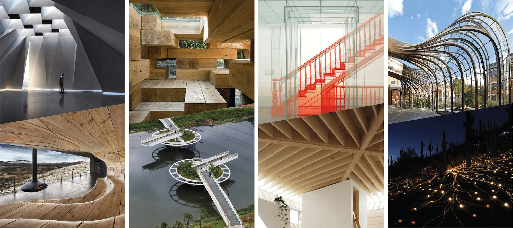
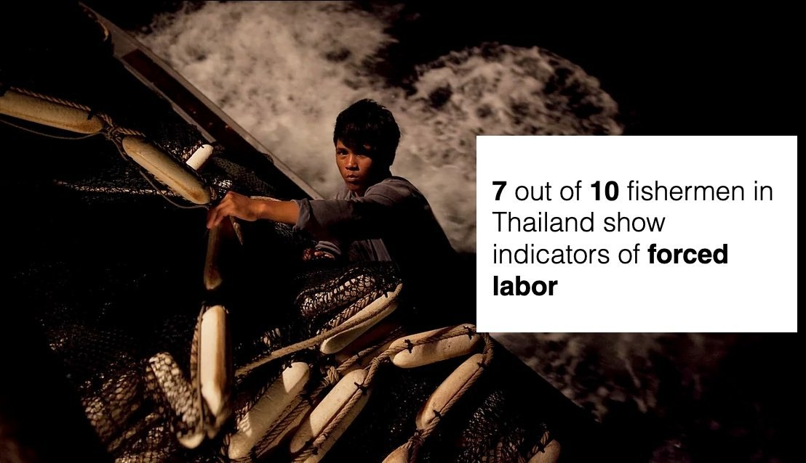
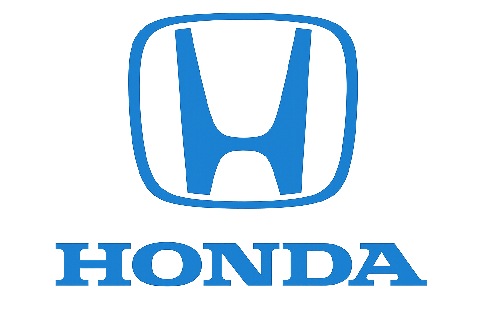
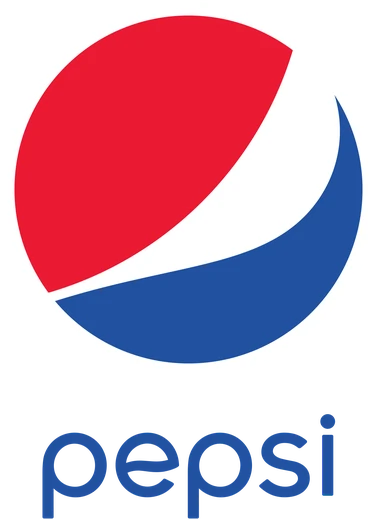

Honda
Developed product and service ecosystem strategies for a changing world of transportation

I've seen it a hundred times.
You invest in a great brand. Then it has to work across more touchpoints, more stakeholders, a new product, a retail refresh, an app ecosystem that keeps growing.
I bring the system-level thinking and the brand creative that turn that complexity into products, activations, and campaigns that tie business impact to brand opportunity.
Developed product and service ecosystem strategies for a changing world of transportation

Brand evolution, retail strategy and design

Built capacity and developed brand strategies to combat slavery at sea

A first of its kind retail experience merging window shopping with digital purchasing

Welcoming the world with industrial vision
Transformed a small agency player into a multimillion-dollar category leader


I design with systems in mind and people at heart. My work lives at the intersection of research, storytelling, experience, and product. I am committed to shaping things that make experiences more compelling, more meaningful, and more equitable.
What drives me is solving real problems with clarity, creativity, and care. I've led design strategy and creative direction for global brands, early-stage ventures, NGOs, and civic institutions, moving from insight to impact across physical and digital platforms.
Human-centered design, for me, isn't just a method. It's a way to bridge disciplines, pulling together culture, aesthetics, systems logic, and empathy to connect human need to long-term value. Increasingly, that work is accelerated by custom AI-integrated workflows I've built into my practice. Not as a shortcut, but as a way to hold more complexity, move faster between insight and concept, and spend more time on the thinking that actually requires a human.
I thrive in complex collaborative spaces where ideas get tested, strategy gets tangible, and design earns its place by delivering on business goals.
Most teams already know something's wrong. The hard part is finding the actual problem underneath the loudest symptom. I come in as an outside observer with no stake in the existing answer, pull in perspectives that aren't usually in the room, and reframe the challenge until the right question becomes obvious. A well-framed problem is already half-solved.
A brand isn't a logo stretched across every surface, it's a world people want to spend time in. I build the aesthetic and the system underneath it together, so a brand doesn't just look consistent, it feels like somewhere worth being. Recognition is cheap. Love is the thing that actually moves business.
Most strategy dies in the handoff, a deck gets delivered and the client has to translate it into decisions alone. I work directly with the client's own leadership, solving the actual business problem in the room, not presenting a point of view on it after the fact. The thinking and the decision happen together, or the thinking doesn't count.
Strategy, design, technology, research, community, and business logic don't naturally speak the same language. Most projects fail in the translation. I've spent 20 years working at the joints between disciplines, helping teams that think differently actually build together. The work is better when the people making it trust each other. Getting there is the job.